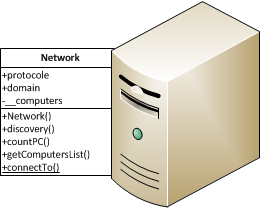

If you have finished with Basics, here things get serious now. Indeed, this chapter illustrate the Network Class which is also fully designed with WMI stuffs. Let’s begin with a small instroduction of the Network Class first.
The network is represented by a class : Network
To discover other Windows machines around, we need to instantiate a new object Network and use it’s method discover() that will take care of the rest:
PPy> net = Network(localhost.workgroup)
PPy> net.discovery()
[u'FLUXIUS-WINDEV', u'WIN-MANAO']
PPy> net.getComputersList()
[u'FLUXIUS-WINDEV', u'WIN-MANAO']
Has you can see, it is also possible to retrieve the list at any moment with the method getComputersList().
Connecting to another machine is very simple
PPy> hmachine2 = Network(localhost.domain).connectTo("WIN-MANAO")
Connecting to 'WIN-MANAO'
Username: fluxius
Password:
PPy> machine2 = Machine(hmachine2)
If you display machine2’s informations, you could see by yourself that this object correspond to WIN-MANAO
PPy> machine2
Machine [WIN-MANAO]
{
type: computer
name: WIN-MANAO
workgroup: OUFGROUP
domain: OUFGROUP
ipaddress: (u'192.168.233.139', u'fe90::xxxx:xxxx:xxxx:xxxx')
macaddress: 00:0C:xx:xx:xx:xx
<[OperatingSystem]: version="6.1.7601"; name="Microsoft Windows 7 Professionnel "; >
}
Note
For each connection, you will be asked to write logins informations. To avoid it, use username and password parameters in the method connectTo (pwplib.Network.connectTo()).
If you have followed Basics page, you have nothing to know more about management tools implemented in this framework yet. Indeed, methods from machine2 are the same as in localhost, for example:
PPy> machine2.getExeList()
[(u'AddressBook',), (u'Connection Manager',), (u'DirectDrawEx',), (u'DXM_Runtime
',), (u'Fontcore',), (u'IE40',), (u'IE4Data',), (u'IE5BAKEX',), (u'IEData',), ...
...